Apache NetBeans
Apache NetBeansLatest release
NetBeans Platform Quick Start Using Maven
| This tutorial needs a review. You can edit it in GitHub following these contribution guidelines. |
Welcome to the NetBeans Platform!
This document is a quick demonstration of how to create a simple NetBeans Platform application on top of the Maven build framework. After using Maven archetypes to create the NetBeans Platform application build structure, you use the Swing UI toolkit and "Matisse" GUI Builder to create a window component. The modular aspect of the NetBeans Platform enables you to expand the functionality of your application by adding new features during development or at runtime.
This document is based on the Ant-based NetBeans Platform Quick Start for NetBeans Platform. and illustrates some of the differences between using Ant and Maven to develop NetBeans Platform applications. After you understand how Maven is different from Ant, you can easily proceed through other tutorials on the NetBeans Platform Learning Trail.
If you are new to the NetBeans Platform, you might want to watch the screencast series Top 10 NetBeans APIs.
| You do not need to download Maven because it is bundled with the IDE. Optionally, use your own download of Maven, in which case use the Options window to configure your Maven settings. |
Before starting this tutorial you may want to familiarize yourself with the following documentation:
Creating a Maven Based NetBeans Platform Application Project
In this section you use the New Project wizard to create a NetBeans Platform Application from a Maven archetype. The wizard creates the Maven module projects that you need to develop an application on the NetBeans Platform. The wizard also provides the option of creating a NetBeans module in the application project, but in this tutorial you create each module individually.
Creating the Project
Perform the following steps to create the NetBeans Platform application using the New Project wizard.
-
Choose File > New Project (Ctrl-Shift-N) to open the New Project wizard.
1. Select NetBeans Application from the Maven category:
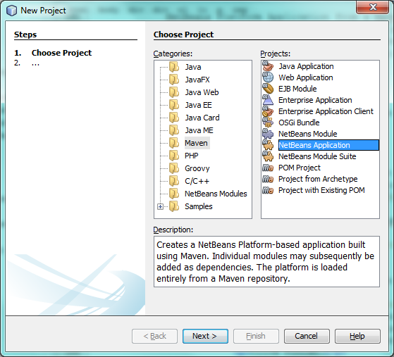
Figure 1. Screenshot of New Project wizard
Click Next.
-
Type MavenPlatformWordApp for the Project Name and set the Project Location to an appropriate folder on your system. For purposes of this tutorial, keep the default values of the Maven settings, such as the group ID, as shown below:
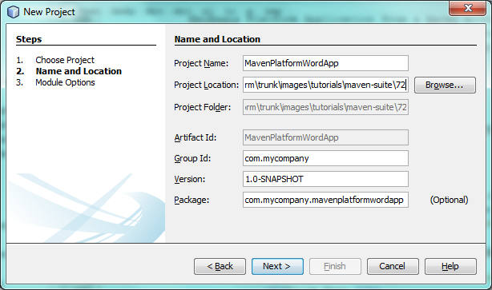
Figure 2. Screenshot of New Project wizard
Click Next.
-
Select the version of the NetBeans APIs you want to use:
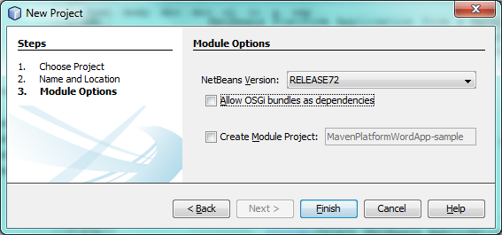
Figure 3. Screenshot of New Project wizard
As you can see, you can create a module together with your application, which we won’t do in this tutorial. In this tutorial, we create all the modules separately.
Click Finish.
Note. If this is your first NetBeans Platform application using Maven, it can take some time to create the projects because the IDE needs to download any necessary artifacts from the NetBeans Maven repository.
When you click Finish, by default the IDE creates the following Maven project types:
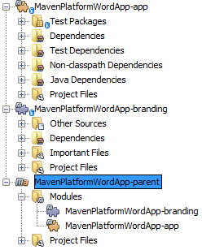
Figure 4. Screenshot of New Project wizard
-
app. The app project enumerates included modules; permits interactive runs; produces various kinds of packaging, such as ZIP by default, but optionally JNLP, NBMs, and in the future perhaps OSGi; holds functional tests. Each module project specifies its own compile dependencies, while the app project’s dependencies are anything additional that should be present at runtime. For example, that includes, by default, the whole platform cluster, that is, the set of modules constituting the "platform" cluster. The app project could include other clusters, or subsets of clusters, or whatever plugins you want included in your app which are not used as compilation dependencies. At a minimum, core.startup and its transitive dependencies are included.
-
branding. This project contains the global resources used for branding the application, such as the splash screen.
-
parent. This project is a Maven reactor project for the NetBeans Platform application, which lists the modules to include and the location of the project’s repositories. This project does not contain any sources. The IDE generates the modules containing the sources and resources in sub-directories of this project.
For all Maven projects, the pom.xml file (POM) is located under the Project Files node in the Projects window. If you look at the POM for the parent project, you can see that the two other modules created by the wizard are listed as modules in the application:
<modules>
<module>branding</module>
<module>application</module>
</modules>Modifying the Branding Elements
The branding module provides the customization information, such as splash screens and icons, used throughout the NetBeans Platform application. The IDE’s Branding Editor enables you to easily modify the branding properties of the application, giving you a centralized location for changing the name, splash screen, and values of various text elements.
When you create the NetBeans Platform application, the default name for the application is the artifactId of the application. In this exercise, you use the Branding Editor to modify the name of the application and replace the default image for the splash screen.
-
Right-click the branding module and choose Branding, which is a menu item near the end of the right-click popup menu. Wait a moment while the required JARs are downloaded, before continuing.
-
In the Basic tab, modify the Application Title to My Maven Platform Word App. 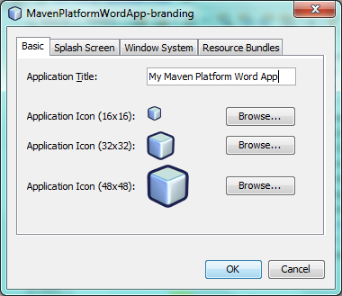
-
Click the Splash Screen tab and click the Browse button next to the default splash screen image to locate a different image. Click OK.
Creating Your First Maven Based NetBeans Module
In this section, you create a new module named MavenWordEngine. You then modify the module to add a window component and a button and text area.
Creating the Module
In this exercise, you create a new module project in the same directory that contains the branding module and application module.
-
Choose File > New Project from the main menu. Select NetBeans Module from the Maven category:
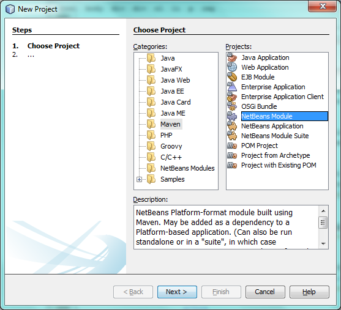
Figure 5. Screenshot of New Project wizard
Click Next.
-
Type MavenWordEngine as the Project Name. Click Browse and locate the MavenPlatformWordApp directory as the Project Location:
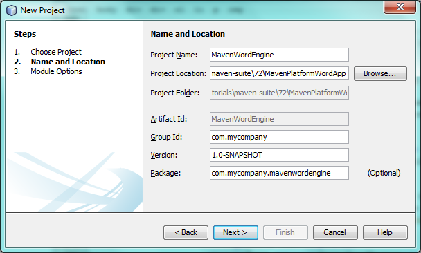
Figure 6. Screenshot of New Project wizard
-
Click Next and select the NetBeans APIs you want to use:
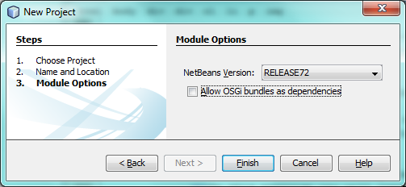
Figure 7. Screenshot of New Project wizard
Click Finish.
If you look at the POM for the new MavenWordEngine module you see that the artifactId of the project is MavenWordEngine:
<modelVersion>4.0.0</modelVersion>
<parent>
<artifactId>MavenPlatformWordApp-parent</artifactId>
<groupId>com.mycompany</groupId>
<version>1.0-SNAPSHOT</version>
</parent>
<groupId>com.mycompany</groupId>
<artifactId>*MavenWordEngine*</artifactId>
<version>1.0-SNAPSHOT</version>
<packaging>nbm</packaging>
<name>MavenWordEngine</name>To build a NetBeans module you need to use the nbm-maven-plugin . If you look at the POM for the module, you can see that the IDE automatically specified nbm for the packaging and that the nbm-maven-plugin is specified as a build plugin:
<plugin>
<groupId>org.codehaus.mojo</groupId>
<artifactId>*nbm-maven-plugin*</artifactId>
<version>3.7</version>
<extensions>true</extensions>
</plugin>If you look at the POM for the parent project, you can see that MavenWordEngine was added to the list of modules:
<modules>
<module>branding</module>
<module>application</module>
<module>*MavenWordEngine*</module>
</modules>Making the Module a Dependency of NetBeans Platform Application
In this exercise, you declare the MavenWordEngine module as a dependency of the app project by adding the dependency in the POM. If you expand the Libraries node for the app you can see that there is a dependency on the branding module and on some other libraries that are dependencies of the cluster required to build the application. You can expand the list of non-classpath dependencies to see the full list of dependencies.
To add the dependency to the app project’s POM, you can edit the POM directly in the editor or, as done below, use the Add Dependency dialog from the Projects window.
-
Expand the app in the Projects window, right-click the Dependencies node, and choose Add Dependency:
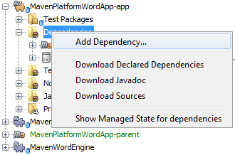
Figure 8. Screenshot of Add Dependency dialog
1. Click the Open Projects tab and select MavenWordEngine:
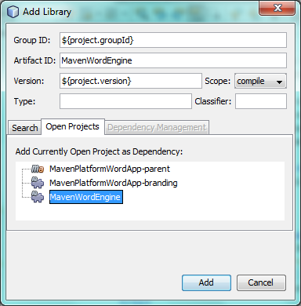
Figure 9. Screenshot of Add Dependency dialog
Click OK.
-
If you expand the app in the Projects window, you can see that MavenWordEngine is now listed as a dependency:
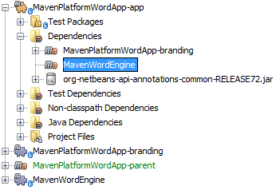
Figure 10. Screenshot of Add Dependency dialog
Adding a Window Component to the Module
In this exercise, you use a wizard to add a Window Component to the MavenWordEngine module.
-
Right-click MavenWordEngine in the Projects window and choose New > Window. Select output in Window Position:
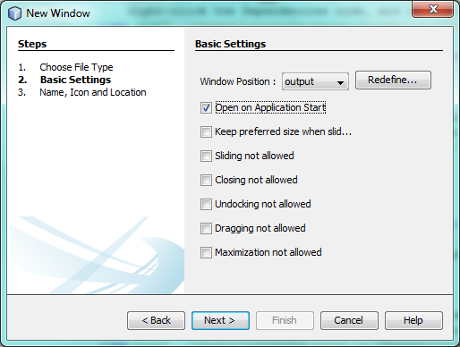
Figure 11. Screenshot of window component page in New File wizard
-
Type Text in the Class Name Prefix:
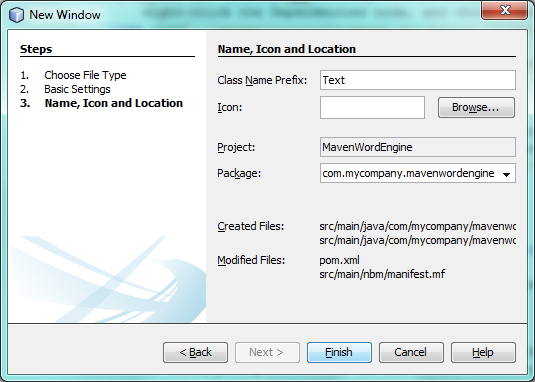
Figure 12. Screenshot of window component page in New File wizard
Click Finish.
-
When you click Finish, in the Projects window you can see that the IDE generated the class
TextTopComponent.javaincom.mycompany.mavenwordengineunder Source Packages:
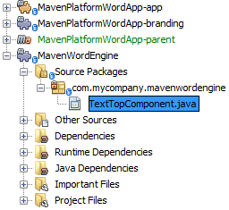
Figure 13. Screenshot of window component page in New File wizard
Modifying the Window Component
In this exercise, you add a text area and a button to the window component. You then modify the method invoked by the button to change the letters in the text area to upper case letters.
-
Click the Design tab of
TextTopComponent.javain the editor. Drag and drop a button and a text area from the Palette (Ctrl-Shift-8) onto the window. Right-click the text area and choose Change Variable Name, and then type text as the name. You use the name when accessing the component from your code. Set the text of the button to "Filter!". You should now see the following:
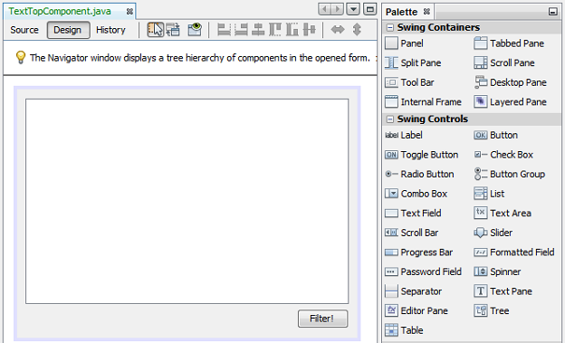
Figure 14. Screenshot of window component page in New File wizard
-
Double-click the Filter! button in the Design view to open the event handler method for the button in the source code editor. The method is created automatically when you double-click the button element and the Source view opens. Modify the body of the method to add the following code.
private void jButton1ActionPerformed(java.awt.event.ActionEvent evt) {
*String s = text.getText();
s = s.toUpperCase();
text.setText(s);*
}Save your changes.
Trying Out the Application
To try out the application, to make sure that everything is working correctly, right-click the project node of the application and choose Build with Dependencies:
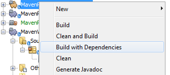
Figure 15. Screenshot of Reactor build order in Output window
The action mapped to "Build with Dependencies" builds the project using the Reactor plugin. When you build a project using the Reactor plugin, the dependencies of the sub-projects are built before the containing project is built. The Output window displays the build order:
Reactor Build Order:
MavenPlatformWordApp-parent
MavenPlatformWordApp-branding
MavenWordEngine
MavenPlatformWordApp-appThe results of the build are also displayed in the Output window.
Reactor Summary:
MavenPlatformWordApp-parent ....................... SUCCESS [0.720s]
MavenPlatformWordApp-branding ..................... SUCCESS [4.427s]
MavenWordEngine ................................... SUCCESS [5.845s]
MavenPlatformWordApp-app .......................... SUCCESS [22.644s]
------------------------------------------------------------------------
BUILD SUCCESS
------------------------------------------------------------------------
Total time: 34.679s
Finished at: Tue Sep 18 11:29:33 CEST 2012
Final Memory: 15M/134M
------------------------------------------------------------------------To run the project, in the Projects window, right-click the project node of the application, and choose Run.
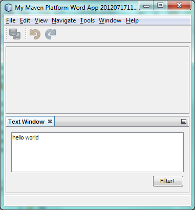
Figure 16. Screenshot of Reactor build order in Output window
After the application launches, you can try out the application by performing the following steps.
-
Choose Window > Text from the main menu of the platform application to open the Text window.
-
Type some lower case letters in the text area and click Filter! When you click Filter!, the letters that you typed are changed to upper case and displayed in the text area.
In the next sections, you decouple the user interface from the business logic in your application. You start by creating a module that provides an API. Then you create a module that implements the API. Finally, you change the window defined above so that implementations of the API are loaded at runtime into the application. In that way, the GUI is able to load multiple filters without needing to care about any of the implementation details.
Creating a Module that Defines a Service
In this exercise, you create a module named TextFilter and add the module as a dependency to the application. The TextFilter module provides an API and only contain an interface. You can then access the service from your other modules by using the NetBeans Lookup mechanism.
Setting Up the Module
In this exercise, you perform the following steps to create the TextFilter module. These steps are the same as you did previously to create the WordEngine module above.
-
Choose File > New Project (Ctrl-Shift-N). As explained in the previous section, select NetBeans Module from the Maven category. Click Next. Type TextFilter for the Project Name. Click Browse to set the Project Location and locate the directory of the parent project. Click Next, choose the version of the NetBeans APIs you want to use, and click Finish.
When you click Finish, the IDE creates the module and opens the module project TextFilter in the Projects window. The IDE modifies pom.xml of the parent project to add the new module to the list of modules to include in the project.
<modules>
<module>branding</module>
<module>application</module>
<module>MavenWordEngine</module>
<module>TextFilter</module>
</modules>-
After you create the module you need to add the module as a dependency of the app project. Right-click the Dependencies node of the app project and choose Add Dependency. Click the Open Projects tab in the Add Dependency dialog. Select the TextFilter module. Click OK.
When you click OK, the IDE adds the module as a dependency of the project. If you expand the Libraries node, you can see that the module is added to the list of dependencies. In the POM for application, you can see that the IDE added the following lines inside the dependencies element:
<dependency>
<groupId>${project.groupId}</groupId>
<artifactId>TextFilter</artifactId>
<version>${project.version}</version>
</dependency>Adding an Interface to the TextFilter Module
In this exercise, you add a simple interface to the TextFilter module.
-
Right-click the TextFilter module and choose New > Java Interface.
-
Type TextFilter as the Class Name.
-
Select com.mycompany.textfilter in the Package dropdown list. Click Finish.
-
Modify the class to add the following code:
package com.mycompany.textfilter;
public interface TextFilter {
*String process(String s);*
}Making the TextFilter Interface Public
In this exercise, you make the contents of the com.mycompany.textfilter package public so that other modules can access its public classes and interfaces. To declare a package as public, you modify the configuration element of nbm-maven-plugin in the POM to specify the packages that are exported as public by the plugin. You can make the changes to the POM in the editor or by selecting the packages to be made public in the project’s Properties dialog box, as explained in the steps below.
-
Right-click the TextFilter module and choose Properties.
-
Select the Public Packages category in the Project Properties dialog.
1. Select the com.mycompany.textfilter package.
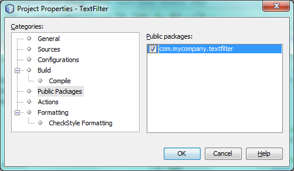
Figure 17. Screenshot of Properties dialog
Click OK.
When you click OK, the IDE modifies the project POM to modify the configuration element of the nbm-maven-plugin artifact to add the following entries:
<plugin>
<groupId>org.codehaus.mojo</groupId>
<artifactId>nbm-maven-plugin</artifactId>
<version>3.7</version>
<extensions>true</extensions>
<configuration>
*<publicPackages>
<publicPackage>com.mycompany.textfilter</publicPackage>
</publicPackages>*
</configuration>
</plugin>For more information, see nbm-maven-plugin manifest.
Creating a Module that Implements the Service
In this exercise, you create the module MyFilter and set a dependency on the TextFilter module. In the MavenWordEngine you can then use methods from MyFilter by looking up the TextFilter service. At that point, MyFilter is decoupled from MavenWordEngine.
Setting Up the Module
In this exercise, you create a module named MyFilter. To create the module, you perform the same steps that you performed when you created the TextFilter module.
-
Choose File > New Project (Ctrl-Shift-N). As explained in the previous section, select NetBeans Module from the Maven category. Click Next. Type MyFilter for the Project Name. Click Browse to set the Project Location and locate the application directory. Click Finish.
-
As described previously, add the MyFilter module as a dependency of the app project. Right-click the Dependencies node of the app project and choose Add Dependency. Click the Open Projects tab in the Add Dependency dialog. Select the MyFilter module. Click OK.
Making Code from the TextFilter Module Accessible to the MyFilter Module
In this exercise you add the TextFilter module as a dependency of the MyFilter module.
-
Right-click the Libraries node of the MyFilter project and choose Add Dependency:
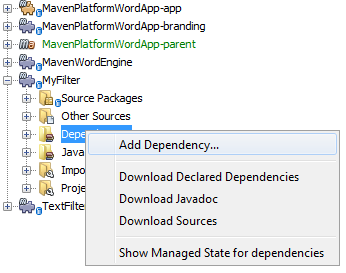
Figure 18. Screenshot of Properties dialog
-
Click the Open Projects tab in the Add Dependency dialog. Select the TextFilter module:
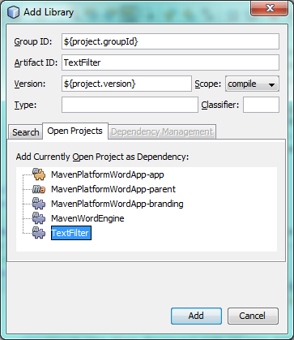
Figure 19. Screenshot of Properties dialog
Click OK.
Implementing the TextFilter Interface
In this exercise, you add a Java class with a single method that is named process that converts a string to upper case. You also specify that the class implements the TextFilter interface. You use an @ServiceProvider annotation to specify that TextFilter is a service that is registered at compile time.
-
Right-click the MyFilter module and choose New > Java Class.
-
Type UpperCaseFilter as the Class Name.
-
Select com.mycompany.myfilter in the Package dropdown list. Click Finish.
1. Modify the class to add the following code.
package com.mycompany.myfilter;
import com.mycompany.textfilter.TextFilter;
import org.openide.util.lookup.ServiceProvider;
*@ServiceProvider(service=TextFilter.class)*
public class UpperCaseFilter *implements TextFilter {
@Override
public String process(String s) {
return s.toUpperCase();
}*
}To use the @ServiceProvider annotation, you need to set a dependency in your module on the NetBeans Lookup API. When the module is compiled, a NetBeans annotation processor will create a META-INF/services folder with a file named after the interface, containing the name of the implementing class. Via Lookup.getDefault , in the next section in this tutorial, the file will be found and, from there, the class implementing the requested interface will be loaded.
Loading Implementations of the TextFilter Interface
In this exercise, you modify the event handler in the JButton in the WordEngine to load implementations of the TextFilter interface. Before adding the code that uses the TextFilter interface in the WordEngine, you need to declare a dependency on the TextFilter module.
-
Right-click the Dependencies node of the MavenWordEngine module and add a dependency on the TextFilter module.
-
Expand the Source Packages of the MavenWordEngine module and open the
TextTopComponentin the source editor. Modify thejButton1ActionPerformedbutton handler method to add the following code.
private void jButton1ActionPerformed(java.awt.event.ActionEvent evt) {
String s = text.getText();
*for (TextFilter filter : Lookup.getDefault().lookupAll(TextFilter.class)) {
s = filter.process(s);
} *
text.setText(s);
}At this point you can run your application. It should look and behave exactly as before, with the difference that the user interface is now decoupled from the business logic.
Figure 20. Screenshot of Reactor build order in Output window
In the next sections, you publish content whenever the "Filter!" button is clicked. You will then create another new NetBeans module with a window that listens to the selection and displays the content published there.
Publishing Content into the Selection
In this exercise, you publish the contents of the text area when the "Filter!" button is clicked.
-
In the MavenWordEngine module, add an
InstanceContentobject to theLookupof the TopComponent.
For details on Lookup , InstanceContent , and related concepts, see NetBeans Lookup in the NetBeans Developer Wiki.
public final class TextTopComponent extends TopComponent {
*private InstanceContent content;*
public TextTopComponent() {
initComponents();
setName(Bundle.CTL_TextTopComponent());
setToolTipText(Bundle.HINT_TextTopComponent());
*content = new InstanceContent();
associateLookup(new AbstractLookup(content));*
}
...
...
...-
Modify the
jButton1ActionPerformedmethod to add the old value of the text to theInstanceContentobject when the button is clicked.
private void jButton1ActionPerformed(java.awt.event.ActionEvent evt) {
String s = text.getText();
for (TextFilter filter : Lookup.getDefault().lookupAll(TextFilter.class)) {
*content.add(s);*
s = filter.process(s);
}
text.setText(s);
}Now a String is published whenever the button is clicked. The String is published into the Lookup of the TopComponent. When the TopComponent is selected, the content of its Lookup is available throughout the application.
In the next section, we create a new module that listens to the Lookup and displays objects found there.
Listening to the Selection
In this section, you create a module named History that displays Strings found in the Lookup of the selected TopComponent. To create the module, you perform the same steps that you performed when you created the TextFilter and MyFilter modules.
Setting Up the Module
-
As done in previous sections, choose File > New Project (Ctrl-Shift-N). Select NetBeans Module from the Maven category. Click Next. Type History for the Project Name. Click Browse to set the Project Location to the parent directory. Click Finish.
-
As done in previous sections, add the History module as a dependency of the app project.
-
As done in previous sections, right-click the History module in the Projects window and choose New > Window. Select editor in Window Position. Click Next. Type History in Class Name Prefix. Click Finish.
You now have a new NetBeans module, registered in the app project, with a new TopComponent named HistoryTopComponent.
Using the History Window to Listen to the Selection
You now add a text area element to the window component that displays the filtered strings.
-
Click the Design tab of
HistoryTopComponent.javain the editor. Drag and drop a text area from the Palette onto the window.
-
Right-click the text area and choose Change Variable Name and then type historyText as the name.
-
Implement the
LookupListenerclass and add the following code to theHistoryTopComponent. The window listens to the Lookup for the String class whenever theHistoryTopComponentopens and displays all retrieved String objects in the text area.
...
...
...
public final class HistoryTopComponent extends TopComponent *implements LookupListener* {
*Result<String> stringsInSelectedWindow;*
public HistoryTopComponent() {
initComponents();
setName(Bundle.CTL_HistoryTopComponent());
setToolTipText(Bundle.HINT_HistoryTopComponent());
}
*@Override
public void resultChanged(LookupEvent le) {
StringBuilder sb = new StringBuilder();
for (String string : stringsInSelectedWindow.allInstances()) {
sb.append(string).append('\n');
}
historyText.setText(sb.toString());
}
@Override
public void componentOpened() {
stringsInSelectedWindow = Utilities.actionsGlobalContext().lookupResult(String.class);
stringsInSelectedWindow.addLookupListener(this);
}
@Override
public void componentClosed() {
stringsInSelectedWindow.removeLookupListener(this);
}*
...
...
...Running the Application
You can now try out the application.
-
Right-click the project node of the parent and choose Clean.
-
Right-click the project node of the app and choose Build with Dependencies.
-
Right-click the project node of the app and choose Run.
When you click Run, the IDE launches the NetBeans Platform application. You can open the Text window and the History window from the Window menu. You should see the following:
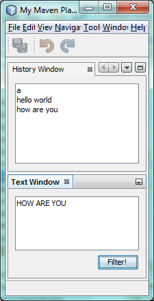
Figure 21. Screenshot of final NetBeans Platform application
When you type text in the Text window and click the Filter! button, the text is converted to upper case letters and the text is added to the content of the History window.
This tutorial demonstrated the fundamental pieces of NetBeans Platform applications. Creating a NetBeans Platform application using Maven is not very different from creating an application using Ant. The major difference is understanding how the Maven POM controls how the application is assembled. For more examples on how to build NetBeans Platform applications and modules, see the tutorials listed in the NetBeans Platform Learning Trail.
See Also
For more information about creating and developing applications, see the following resources.
If you have any questions about the NetBeans Platform, feel free to write to the mailing list, dev@platform.netbeans.org, or view the NetBeans Platform mailing list archive.